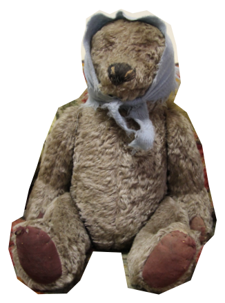

Задания от Лены Королёвой. Истории блокадных игрушек

Я принадлежал дочери солиста театра музкомедии Анатолия Викентьевича Королькевича Наташе, был её любимой игрушкой. Книга Королькевича «А музы не молчали» посвящена моей хозяйке Наташе, именно Анатолий Викентьевич дал название музею.